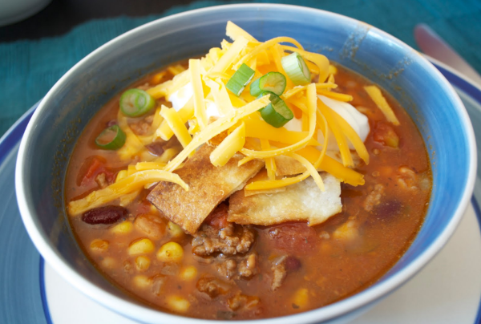

Taco Soup

Description
Taco soup from Make it Fast, Cook it Slow by Stephanie O'Dea
Taco soup is a flavorful and hearty soup that serves 12. Made in a slow cooker, it features ground turkey or beef, kidney beans, pinto beans, corn, and a mix of diced tomatoes and tomatoes with chiles. Taco seasoning and ranch dressing mix give it a bold flavor. Top with sour cream and cheddar cheese before serving.
Ingredients
- 1 pound ground turkey or beef, browned and drained
- 1 medium onion, chopped
- 2 (15-ounce) cans kidney beans
- 2 (15-ounce) cans pinto beans
- 2 (15-ounce) cans corn with their juices
- 1 (28-ounce) can diced tomatoes with their juices
- 1 (14-ounce) can tomatoes with chiles (Rotel), with their juices
- 1 packet taco seasoning
- 1 packet ranch dressing mix
- Sour cream and cheddar cheese, for garnish
Steps
- Put the meat and onion into the slow cooker.
- Drain and rinse beans, and add to the cooker. Add the corn and tomatoes.
- Stir in contents of the seasoning packets.
- Cover and cook on low for 8 hours, or on high for 4 hours.
- Ladle into bowls.
- Add a handful of cheddar cheese and a dollop of sour cream to each bowl before eating.